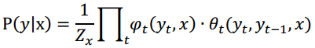
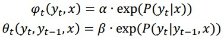

3D Obstacle Perception¶
There are three main components of 3D obstacle perception:
LiDAR Obstacle Perception
RADAR Obstacle Perception
Obstacle Results Fusion
LiDAR Obstacle Perception¶
The following sections describe the obstacle perception pipeline given input as 3D point cloud data from the LiDAR sensor that are resolved by Apollo:
HDMap Region of Interest (ROI) Filter
Convolutional Neural Networks (CNN) Segmentation
MinBox Builder
HM ObjectTracker
Sequential TypeFusion
HDMap Region of Interest (ROI) Filter¶
The Region of Interest (ROI) specifies the drivable area that includes road surfaces and junctions that are retrieved from the HD (high-resolution) map. The HDMap ROI filter processes LiDAR points that are outside the ROI, removing background objects, e.g., buildings and trees around the road. What remains is the point cloud in the ROI for subsequent processing.
Given an HDMap, the affiliation of each LiDAR point indicates whether it is inside or outside the ROI. Each LiDAR point can be queried with a lookup table (LUT) of 2D quantization of the region around the car. The input and output of the HDMap ROI filter module are summarized in the table below.
Input |
Output |
|---|---|
The point cloud: A set of 3D points captured from LiDAR Sensor. |
The indices of input points that are inside the ROI defined by HDMap. |
HDMap: A set of polygons, each of which is an ordered set of points. |
The Apollo HDMap ROI filter generally consists of three successive steps:
Coordinate transformation.
ROI LUT construction.
Point inquiry with ROI LUT.
Coordinate Transformation¶
For the HDMap ROI filter, the data interface for HDMap is defined by a set of polygons, each of which is actually an ordered set of points in the world coordinate system. Running an inquiry on the points with the HDMap ROI requires that the point cloud and polygons are represented in the same coordinate system. For this purpose, Apollo transforms the points of the input point cloud and the HDMap polygons into a local coordinate system that originates from the LiDAR sensor’s location.
ROI LUT Construction¶
To determine an input point, whether inside or outside the ROI, Apollo adopts a grid-wise LUT that quantifies the ROI into a birds-eye view 2D grid. As shown in Figure 1, this LUT covers a rectangle region, bounded by a predefined spatial range around the general view from above in the boundary of HDMap. Then it represents the affiliation with the ROI for each cell of the grid (i.e., 1/0 represents it is inside/outside the ROI). For computational efficiency, Apollo uses a scan line algorithm and bitmap encoding to construct the ROI LUT.

The blue lines indicate the boundary of HDMap ROI, including road surfaces and junctions. The red solid dot represents the origin of the local coordinate system corresponding to the LiDAR sensor location. The 2D grid is composed of 8×8 cells that are shown as green squares. The cells inside the ROI are blue-filled squares while the ones outside the ROI are yellow-filled squares.
Point Inquiry with ROI LUT¶
Based on the ROI LUT, the affiliation of each input point is queried using a two-step verification. Then, Apollo conducts data compilation and output as described below. For the point inquiry process, Apollo:
Identifies whether the point is inside or outside the rectangle region of ROI LUT.
Queries the corresponding cell of the point in the LUT for its affiliation with respect to the ROI.
Collects all the points that belong to the ROI and outputs their indices with respect to the input point cloud.
Set the user-defined parameters in the configuration file: modules/perception/production/data/perception/lidar/models/roi_filter/hdmap_roi_filter/hdmap_roi_filter.conf.
The table below describes the usage of parameters for HDMap ROI Filter.
Parameter Name |
Usage |
Default |
|---|---|---|
range |
The range of ROI LUT (the 2D grid) with respect to the origin (LiDAR sensor). |
120.0 meters |
cell_size |
The size of cells for quantizing the 2D grid. |
0.25 meter |
extend_dist |
The distance that the ROI extends from the polygon boundary. |
0.0 meter |
no_edge_table |
use edge_table for polygon mask generation. |
false |
set_roi_service |
enable roi_service to perception lidar modules. |
true |
Convolutional Neural Networks (CNN) Segmentation¶
After identifying the surrounding environment using the HDMap ROI filter, Apollo obtains the filtered point cloud that includes only the points inside the ROI (i.e., the drivable road and junction areas). Most of the background obstacles, such as buildings and trees around the road region, have been removed, and the point cloud inside the ROI is fed into the segmentation module. This process detects and segments out foreground obstacles, e.g., cars, trucks, bicycles, and pedestrians.
Input |
Output |
|---|---|
The point cloud (a set of 3D points) |
A set of objects corresponding to obstacles in the ROI. |
The point indices that indicate points inside the ROI as defined in HDMap |
Apollo uses a deep CNN for accurate obstacle detection and segmentation. The Apollo CNN segmentation consists of four successive steps:
Channel Feature Extraction.
CNN-Based Obstacle Prediction.
Obstacle Clustering.
Post-processing.
The following sections describe the deep CNN in detail.
Channel Feature Extraction¶
Given a point cloud frame, Apollo builds a birds-eye view (i.e., projected to the X-Y plane) that is a 2D grid in the local coordinate system. Each point within a predefined range with respect to the origin (i.e., the LiDAR sensor) is quantized into one cell of the 2D grid based on its X and Y coordinates. After quantization, Apollo computes 8 statistical measurements of the points for each cell of the grid, which will be the input channel features fed into the CNN in the subsequent step. The statistical measurements computed are the:
Maximum height of points in the cell.
Intensity of the highest point in the cell.
Mean height of points in the cell.
Mean intensity of points in the cell.
Number of points in the cell.
Angle of the cell’s center with respect to the origin.
Distance between the cell’s center and the origin.
Binary value indicating whether the cell is empty or occupied.
CNN-Based Obstacle Prediction¶
Based on the channel features described above, Apollo uses a deep fully-convolutional neural network (FCNN) to predict the cell-wise obstacle attributes including the offset displacement with respect to the potential object center — called center offset, (see Figure 2 below), objectness, positiveness, and object height. As shown in Figure 2, the input of the network is a W×H×C channel image where:
W represents the column number of the grid.
H represents the row number of the grid.
C represents the number of channel features.
The FCNN is composed of three layers:
Downstream encoding layers (feature encoder).
Upstream decoding layers (feature decoder).
Obstacle attribute prediction layers (predictor).
The feature encoder takes the channel feature image as input and successively down-samples its spatial resolution with increasing feature abstraction. Then the feature decoder gradually up-samples the encoded feature image to the spatial resolution of the input 2D grid, which can recover the spatial details of the feature image to facilitate the cell-wise obstacle attribute prediction. The down-sampling and up-sampling operations are implemented in terms of stacked convolution/devolution layers with non-linear activation (i.e., ReLu) layers.

Obstacle Clustering¶
After the CNN-based prediction step, Apollo obtains prediction information for individual cells. Apollo utilizes five cell object attribute images that contain the:
Center offset
Objectness
Positiveness
Object height
Class probability
To generate obstacle objects, Apollo constructs a directed graph, based on the cell center offset prediction, and searches the connected components as candidate object clusters.
As shown in Figure 3, each cell is a node of the graph and the directed edge is built based on the center offset prediction of the cell, which points to its parent node corresponding to another cell.
Given this graph, Apollo adopts a compressed Union Find algorithm to efficiently find the connected components, each of which is a candidate obstacle object cluster. The objectness is the probability of being a valid object for one individual cell. So Apollo defines the non-object cells as the ones with the objectness of less than 0.5. Thus, Apollo filters out the empty cells and non-object ones for each candidate object cluster.

The red arrow represents the object center offset prediction for each cell.
The blue mask corresponds to the object cells for which the objectness probability is no less than 0.5.
The cells within the solid red polygon compose a candidate object cluster.
The red filled five-pointed stars indicate the root nodes (cells) of sub-graphs that correspond to the connected components.
One candidate object cluster can be composed of multiple neighboring connected components whose root nodes are adjacent to each other.
The class probabilities are summed up over the nodes (cells) within the object cluster for each candidate obstacle type, including vehicle, pedestrian, bicyclist and unknown. The obstacle type corresponding to the maximum-averaged probability is the final classification result of the object cluster.
Post-processing¶
After clustering, Apollo obtains a set of candidate object clusters each of which includes several cells. In the post-processing step, Apollo first computes the detection confidence score and object height for each candidate cluster by averaging the positiveness and object height values of its involved cells respectively. Then, Apollo removes the points that are too high with respect to the predicted object height and collects the points of valid cells for each candidate cluster. Finally, Apollo removes the candidate clusters that have either a very low confidence score or a small number of points, to output the final obstacle clusters/segments.
Set the user-defined parameters in the configuration file modules/perception/production/data/perception/lidar/models/cnnseg/velodyne128/cnnseg_param.conf.
The table below explains the parameter usage and default values for CNN Segmentation.
Parameter Name |
Usage |
Default |
|---|---|---|
objectness_thresh |
The threshold of objectness for filtering out non-object cells in the obstacle clustering step. |
0.5 |
model_type |
Network type, e.g., RTNet means tensorRT accelerated network |
RTNet |
confidence_thresh |
The detection confidence score threshold for filtering out the candidate clusters in the post-processing step. |
0.1 |
confidence_range |
The confident range with respect to the origin (the LiDAR sensor)for good quality detection. |
85.0 meters |
height_thresh |
If it is non-negative, the points that are higher than the predicted object height by height_thresh are filtered out in the post-processing step. |
0.5 meters |
min_pts_num |
In the post-processing step, the candidate clusters with less than min_pts_num points are removed. |
3 |
ground_detector |
Ground surface detector type. |
SpatioTemporalGroundDetector |
gpu_id |
The ID of the GPU device used in the CNN-based obstacle prediction step. |
0 |
roi_filter |
The ROI filter type, with help of the HDmap. |
HdmapROIFilter |
network_param {instance_pt_blob, etc} |
The types of different caffe input and outputlayer blob. |
layer predefined |
feature_param {width} |
The number of cells in X (column) axis of the 2D grid. |
864 |
feature_param {height} |
The number of cells in Y (row) axis of the 2D grid. |
864 |
feature_param {min_height} |
The minimum height with respect to the origin (the LiDAR sensor). |
-5.0 meters |
feature_param {max_height} |
The maximum height with respect to the origin (the LiDAR sensor). |
5.0 meters |
feature_param {use_intensity_feature} |
Enable input channel internsity feature. |
false |
feature_param {use_constant_feature} |
Enable input channel constant feature. |
false |
feature_param {point_cloud_range} |
The range of the 2D grid with respect to the origin (the LiDAR sensor). |
90 meters |
Note: the provided model is a sample for experiment purpose only.
MinBox Builder¶
The object builder component establishes a bounding box for the detected obstacles. Due to occlusions or the distance to the LiDAR sensor, the point cloud forming an obstacle can be sparse and cover only a portion of the surfaces. Thus, the box builder works to recover the full bounding box given the polygon point. The main purpose of the bounding box is to estimate the heading of the obstacle (e.g., vehicle) even if the point cloud is sparse. Equally, the bounding box is used to visualize the obstacles.
The idea behind the algorithm is to find the all areas given an edge of the polygon point. In the following example, if AB is the edge, Apollo projects other polygon points onto AB and establishes the pair of intersections that has the maximum distance. That’s one of the edges belonging to the bounding box. Then it is straightforward to obtain the other edge of the bounding box. By iterating all edges in the polygon, as shown in Figure 4, Apollo determines a 6-edge bounding box. Apollo then selects the solution that has the minimum area as the final bounding box.

HM Object Tracker¶
The HM object tracker is designed to track obstacles detected by the segmentation step. In general, it forms and updates track lists by associating current detections with existing track lists, deletes the old track lists if they no longer persist, and spawns new track lists if new detections are identified. The motion state of the updated track lists are estimated after association. In the HM object tracker, the Hungarian algorithm is used for detection-to-track association, and a Robust Kalman Filter is adopted for motion estimation.
Detection-to-Track Association¶
When associating detection to existing track lists, Apollo constructs a bipartite graph and then uses the Hungarian algorithm to find the best detection-to-track matching with minimum cost (distance).
Computing Association Distance Matrix¶
In the first step, an association distance matrix is established. The distance between a given detection and one track is calculated according to a series of association features including motion consistency and appearance consistency. Some features used in HM tracker’s distance computing are shown below:
Association Feature Name |
Evaluating Consistency Description |
|---|---|
location_distance |
Motion |
direction_distance |
Motion |
bbox_size_distance |
Appearance |
point_num_distance |
Appearance |
histogram_distance |
Appearance |
Additionally, there are some important parameters of distance weights that are used for combining the above-mentioned association features into a final distance measurement.
Bipartite Graph Matching via Hungarian Algorithm
Given the association distance matrix, as shown in Figure 5, Apollo constructs a bipartite graph and uses the Hungarian algorithm to find the best detection-to-track matching via minimizing the distance cost. It solves the assignment problem within O(n^3) time complexity. To boost computing performance, the Hungarian algorithm is implemented after cutting the original bipartite graph into subgraphs, by deleting vertices with a distance greater than a reasonable maximum distance threshold.

Track Motion Estimation¶
After the detection-to-track association, the HM object tracker uses a Robust Kalman Filter to estimate the motion states of current track lists with a constant velocity motion model. The motion states include the belief anchor point and belief velocity, which correspond to the 3D position and the 3D velocity respectively. To overcome possible distraction caused from imperfect detections, Robust Statistics techniques are implemented in the tracker’s filtering algorithm.
Observation Redundancy
The measurement of velocity that is the input of the filtering algorithm is selected among a series of redundant observations, which include anchor point shift, bounding box center shift, and bounding box corner point shift. Redundant observations bring extra robustness to filtering measurement, because the probability that all observations fail is much less than the probability that a single observation fails.
Breakdown
Gaussian Filter algorithms assume their noises are generated from Gaussian distribution. However, this hypothesis may fail in a motion estimation problem because the noise of its measurement may draw from fat-tail distributions. Apollo uses a breakdown threshold in the filtering process to neutralize the over-estimation of update gain.
Update according Association Quality
The original Kalman Filter updates its states without distinguishing the quality of its measurements. However, the quality of measurement is a beneficial indicator of filtering noise and can be estimated. For instance, the distance calculated in the association step could be a reasonable estimate of the quality of measurement. Updating the state of the filtering algorithm according to the association quality enhances robustness and smoothness to the motion estimation problem.
A high-level workflow of HM object tracker is given in Figure 6.
The main points in an HM object tracker workflow are:
Construct the tracked objects and transform them into world coordinates.
Predict the states of existing track lists and match detections to them.
Update the motion state of updated track lists and collect the tracking results.
Sequential Type Fusion¶
To smooth the obstacle type and reduce the type switch over the entire trajectory, Apollo utilizes a sequential type fusion algorithm based on a linear-chain Conditional Random Field (CRF), which can be formulated as follows:


where the unary term acts on each single node, while the binary one acts on each edge.
The probability in the unary term is the class probability output by the CNN-based prediction, and the state transition probability in the binary term is modeled by the obstacle type transition from time t-1 to time t, which is statistically learned from large amounts of obstacle trajectories. Specifically, Apollo also uses a learned confusion matrix to indicate the probability of changing from the predicted type to ground truth type to optimize the original CNN-based class probability.
Using the Viterbi algorithm, the sequential obstacle type is optimized by solving the following problem:

Radar Detector¶
Given the radar data from the sensor, follow a basic process such as the one described below.
First, the track ID should be extended, because Apollo needs a global track ID for ID association. The original radar sensor provides an ID with only 8 bits, so it is difficult to determine if two objects with the same ID in two adjacent frames denote a single object in the tracking history, especially if there is a frame dropping problem. Apollo uses the measurement state provided by the radar sensor to handle this problem. Meanwhile, Apollo assigns a new track ID to the object that is far away from the object with the same track ID as in the previous frame.
Second, use a false positive filter to remove noise. Apollo sets some threshold via radar data to filter results that could be noise. Then, objects are built according the radar data as a unified object format. Apollo translates the objects into world coordinates via calibration results. The original radar sensor provides the relative velocity of the object, so Apollo uses the host car velocity from localization. Apollo adds these two velocities to denote the absolute velocity of the detected object.
Finally, the HDMap ROI filter is used to obtain the interested objects. Only objects inside the ROI are used by the sensor fusion algorithm.
Obstacle Results Fusion¶
The sensor fusion module is designed to fuse LiDAR tracking results and radar detection results. Apollo first matches the sensor results with the fusion items by tracking their IDs. Then it computes the association matrix for unmatched sensor results and unmatched fusion items to get an optimal matching result.
For the matched sensor result, update the corresponding fusion item using the Adaptive Kalman Filter. For the unmatched sensor result, create a new fusion item. Remove any stale unmatched fusion items.
Fusion Items Management¶
Apollo has the concept of publish-sensor. The given radar results are cached. The given LiDAR results trigger the fusion action. The frequency of sensor fusion output is the same as the frequency of publish sensor. Apollo’s publish-sensor is LiDAR. The sensor results feed the fusion pipeline sorted by the sensor time stamp. Apollo keeps all sensor results. The object survival time is set for different sensor objects in Apollo. An object is kept alive if at least one sensor result survives. The Apollo perception module provides fusion results of LiDAR and radar in the short-range area around the car and radar-only results for the long distance.
Sensor Results to Fusion Lists Association¶
When associating sensor results to the fusion lists, Apollo first matches the identical track ID of the same sensor, then constructs a bipartite graph and uses the Hungarian algorithm to find the best result-to-fusion matching of the unmatched sensor results and fusion lists, via minimizing the distance cost. The Hungarian algorithm is the same algorithm that the HM Object Tracker uses. The distance cost is computed by the Euclidean distance of the anchor points of the sensor result and fusion item.
Motion Fusion¶
Apollo uses the Adaptive Kalman filter to estimate the motion of a current item with a constant acceleration motion model. The motion state includes its belief anchor point, belief velocity and belief acceleration, which correspond to the 3D position, its 3D velocity and acceleration respectively. Apollo uses only position and velocity from sensor results. In motion fusion, Apollo caches the state of all sensor results and computes the acceleration via the Kalman Filter. Apollo provides uncertainty of position and velocity in LiDAR tracker and radar detector data. Apollo feeds all the states and uncertainties to the Adaptive Kalman Filter and obtains the fused results. Apollo uses a breakdown threshold in the filtering process to neutralize the over-estimation of update gain.